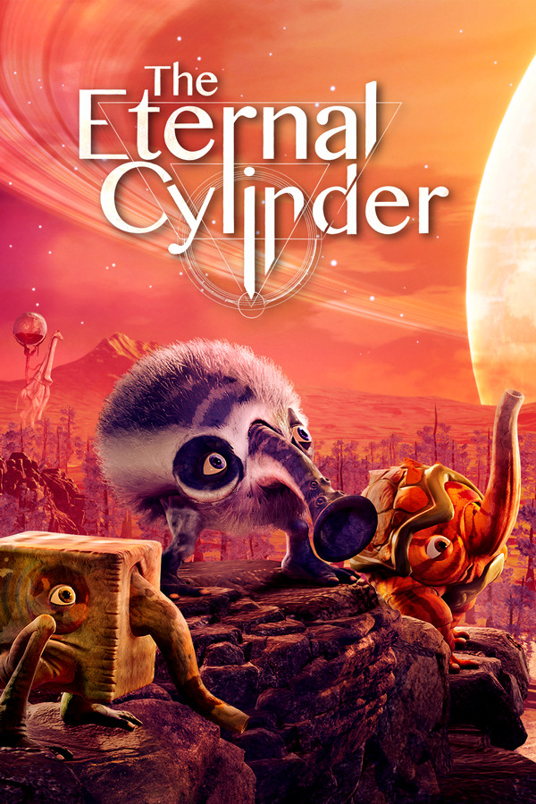

The Eternal Cylinder
The Eternal Cylinder
Details
|  | |
| Playtime | Not Played |
| Last Activity | Never |
| Added | 17/08/2025 0:39:33 |
| Modified | 17/08/2025 0:50:10 |
| Completion Status | Not Played |
| Library | Steam |
| Source | Steam |
| Platform | PC (Windows) |
| Release Date | |
| Community Score | |
| Critic Score | |
| User Score | |
| Genre | Action Adventure |
| Developer | |
| Publisher | |
| Feature | Achievements Cloud Saves Family Sharing Full Controller Support Single-Player Trading Cards |
| Links | Community Hub Discussions Guides News Store Page PCGamingWiki Achievements |
| Tag | Action Action-Adventure Adventure Aliens Atmospheric Colorful Cute Exploration Family Friendly Inventory Management Narration Open World Platformer Puzzle Puzzle Platformer Singleplayer Story Rich Surreal Survival Third Person |
Description
You were born on a dangerous planet. Surreal and fantastical environments, teeming with exotic creatures that defy description. This world is both terrifying and awe-inspiring, as full of wonder and mystery as it is dangerous. But whatever dangers can be found pale in comparison to this world’s biggest threat: The Cylinder. This gargantuan, ancient rolling structure crushes everything in its path. But where did it come from? And how can it be stopped?
In this place, you are but a tiny creature called a Trebhum. While you may not be the fastest or the strongest, you have the most powerful ability of all: adaptation. Trebhum can mutate and evolve new physical attributes and abilities that can help them defend themselves against predators and navigate through this perilous world; what you lack in size, you’ll need to make up for in improvisation and resourcefulness. So, prepare yourself, little Trebhum. Gather your family for the dangerous journey ahead and save your world from The Eternal Cylinder.
An unforgettable alien world to explore…
A vast, open world that contains four unique biomes, each filled with extraordinary flora and strange fauna. What wonders, or horrors, lie ahead will surely be unforgettable.
…with real-time world destruction.
Every time The Cylinder roars to life, more of your beautiful planet is crushed under the weight of the ancient destroyer. Trees fall creating obstacles to escape while hills and mountains are flattened leaving nowhere to hide. Your only chance of survival is to run!
Build Your Own Alien Family
Each Trebhum can choose from 50+ mutations that give them the ability to grow spikes, shoot tornadoes, fly, and more! This allows Trebhum various methods to overcome any obstacle they face! Additionally, each mutation gives Trebhum unique appearances, meaning Trebhum herds become a diverse cast of lovable creatures customized for ultimate survivability.
Solve Ancient Mysteries
In hidden sanctuaries, built by generations past and protected by complex puzzles, is the ancient knowledge passed down from generation to generation of Trebhum. Seek these sanctuaries out for they house the only hope your world has left.
Watch out for The Cylinder’s servants
Servants are abominations created by The Cylinder; infesting, destroying, and consuming every natural thing on the planet, leaving nothing behind. Stay as far away from these monsters as you can!
*ANNIVERSARY UPDATE - NEW CONTENT*
New Creatures to Discover!
2 new creatures now roam the world - Approach at your own risk!
- The Buddugh Gropp is a highly aggressive herbivore found in tundra biomes.
- The Gharukuk is a large tripodal omnivore found in the desert.
A new mutation!
Trebhum have developed a new, fiery mutation allowing them to shoot jets of flame from their trunks. The ability makes sure that any would-be predator knows that Trebhum may be too spicy for food (especially for those with fur!)
New graphics options!
The Eternal Cylinder now supports 4K AND ray tracing make your journey to salvation the most vivid and immersive ever! Enjoy this gorgeous world the way it was meant to be seen, even more vividly!
In this place, you are but a tiny creature called a Trebhum. While you may not be the fastest or the strongest, you have the most powerful ability of all: adaptation. Trebhum can mutate and evolve new physical attributes and abilities that can help them defend themselves against predators and navigate through this perilous world; what you lack in size, you’ll need to make up for in improvisation and resourcefulness. So, prepare yourself, little Trebhum. Gather your family for the dangerous journey ahead and save your world from The Eternal Cylinder.
An unforgettable alien world to explore…
A vast, open world that contains four unique biomes, each filled with extraordinary flora and strange fauna. What wonders, or horrors, lie ahead will surely be unforgettable.
…with real-time world destruction.
Every time The Cylinder roars to life, more of your beautiful planet is crushed under the weight of the ancient destroyer. Trees fall creating obstacles to escape while hills and mountains are flattened leaving nowhere to hide. Your only chance of survival is to run!
Build Your Own Alien Family
Each Trebhum can choose from 50+ mutations that give them the ability to grow spikes, shoot tornadoes, fly, and more! This allows Trebhum various methods to overcome any obstacle they face! Additionally, each mutation gives Trebhum unique appearances, meaning Trebhum herds become a diverse cast of lovable creatures customized for ultimate survivability.
Solve Ancient Mysteries
In hidden sanctuaries, built by generations past and protected by complex puzzles, is the ancient knowledge passed down from generation to generation of Trebhum. Seek these sanctuaries out for they house the only hope your world has left.
Watch out for The Cylinder’s servants
Servants are abominations created by The Cylinder; infesting, destroying, and consuming every natural thing on the planet, leaving nothing behind. Stay as far away from these monsters as you can!
*ANNIVERSARY UPDATE - NEW CONTENT*
New Creatures to Discover!
2 new creatures now roam the world - Approach at your own risk!
- The Buddugh Gropp is a highly aggressive herbivore found in tundra biomes.
- The Gharukuk is a large tripodal omnivore found in the desert.
A new mutation!
Trebhum have developed a new, fiery mutation allowing them to shoot jets of flame from their trunks. The ability makes sure that any would-be predator knows that Trebhum may be too spicy for food (especially for those with fur!)
New graphics options!
The Eternal Cylinder now supports 4K AND ray tracing make your journey to salvation the most vivid and immersive ever! Enjoy this gorgeous world the way it was meant to be seen, even more vividly!